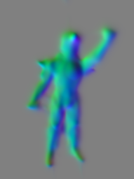

Capture setup

Sample dataset
Colmap camera pose output
Iron Stage1 normal output
Iron Stage1 validation output: Ground Truth:Bottom, Iron prediction:Top
Iron Stage2 Texture material output
|
Capture setup |
Sample dataset |
Colmap camera pose output |
|

Iron Stage1 normal output |
Iron Stage1 validation output: Ground Truth:Bottom, Iron prediction:Top |
Iron Stage2 Texture material output |
| input images | Output1 | Output2 | Output3 |
|---|---|---|---|